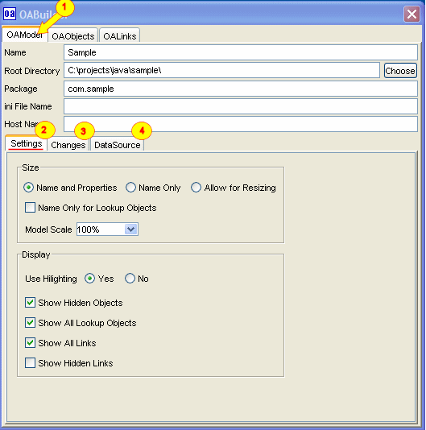
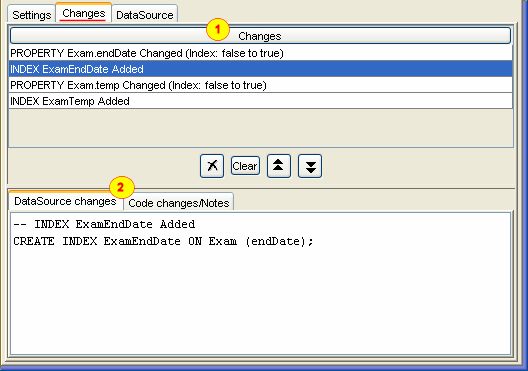
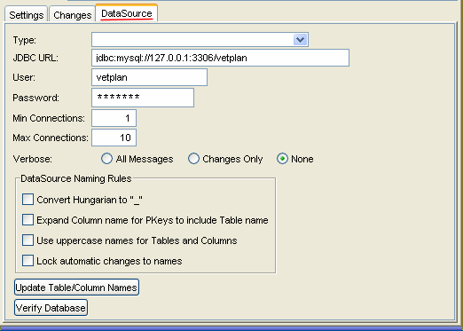

- OAModel tab
- Setting information
- Model changes
- DataSource settings
Settings information:
- Size: chooses the default size to use for display the objects.
- If "Name only ..." is checked, then objects that are "lookup" will only
display the name of the object.
- Display:
"Use Hilighting" to display if color coding is used for objects.
If "Show hidden" is unchecked, then objects that are flagged as hidden are not displayed.
If "Show All Lookup Objects" is unchecked, then objects that are flagged as lookup
object are not displayed.
If "Show all Links" is unchecked, then only the links for the selected
are displayed.
If "Show hidden links" is unchecked, then links that
are flagged as hidden are not displayed, unless one of the objects that are linked is
selected.

Changes: list of changes made to the model. This is used to be able to
determine and generate changes to datasource, etc.
The top is a listing of the changes. There are commands to remove a change, clear all
changes, and to rearrange the order of the changes.
The bottom shows information about the change and how it will affect the database.

DataSource: JDBC settings for establishing a database connection.
The "DataSource Naming Rules" is used to choose the naming convention for the
database table, column, index and constraint names. By default OABuilder will
use the same names given to the Object and Property names.
DataSource Naming Rules
- Convert Hungarian to "_" - this will expand the name to use "_" to seperate names.
- "Expand Column name for PKeys to include Table Name" - by default, it is recommended
to name the object identifier property "Id". If this is checked the the database column
name will be prefixed with the table name.
- Use uupercase names - if checked, then all database names will be in uppercase.
- "Lock automatical changes to names" - if checked, then OABuilder will not change
the database name if the object or property name is changed.
- Update Table/Column Names - this will rename the table and column names to match
the above settings.
- Verify Database - will verify that the database matches the object model.
|